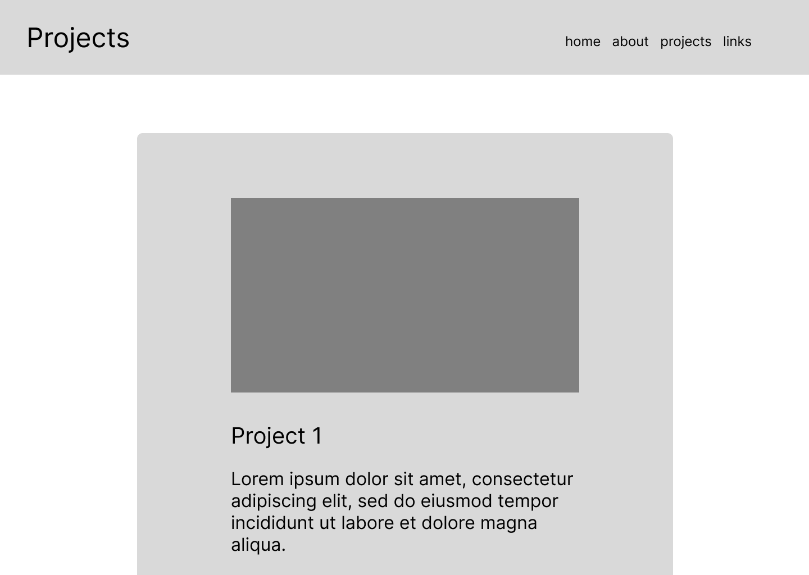

Main Navigation
About Me
I am a content creator focused on gaming peripherals and computer technology, with an emphasis on making tech accessible to everyday users. My work centers on reviewing products from the perspective of the average consumer and gamer, breaking down performance, design, and usability in a clear and engaging way. Unlike many tech creators who target professionals, I aim to simplify complex information so it is easy to understand without losing depth or accuracy. Through my content, I strive to help viewers make informed decisions while also creating visually clean, engaging, and relatable reviews that reflect both functionality and user experience.
Project Component
Sample code:
CSS selector:
.project-preview-wrap, .project-component, .dropdown-analysis
<div class="project-preview-wrap">
<div class="project-component compact-project">
<div class="project-media">
<iframe src="https://www.youtube.com/embed/zpQeYUnSdfw" allowfullscreen></iframe>
</div>
<div class="project-text">
<h2 class="h2">Project Title</h2>
<h3 class="h3">Project Subtitle</h3>
<div class="project-analysis dropdown-analysis">
<details class="analysis-item">
<summary><span>Project Description</span></summary>
<div class="analysis-content">
<p class="paragraph">Description here</p>
</div>
</details>
<details class="analysis-item">
<summary><span>Creating the Project</span></summary>
<div class="analysis-content">
<ol class="numbered-list paragraph">
<li>Step 1</li>
<li>Step 2</li>
</ol>
<img src="img/example.png" class="project-image">
</div>
</details>
</div>
</div>
</div>
</div>
Logitech X2 Superstrike Review
Video Review for YouTube
Project Description
This project is a YouTube review of the Logitech X2 Superstrike, focused on evaluating its performance, design, and overall value for users. The goal was to create an informative yet engaging video that balances technical analysis with clear, accessible communication. This project reflects my visual ethos of combining clean presentation with purposeful storytelling.
Creating the project
- Research & Planning: I began by researching the Logitech G Pro X Superstrike and identifying key aspects to evaluate, including build quality, ergonomics, responsiveness, and overall user experience.
- Structuring the Review: I organized these points into a clear structure to ensure the video would be informative, focused, and easy for viewers to follow.
- Scripting the Outline: I created a rough script to guide filming while still allowing for a natural and conversational delivery.

- Filming Content: I recorded both overhead footage and close-up shots of the mouse to clearly demonstrate its design, features, and performance.

- Post-production: I focused on capturing clean, detailed visuals to reinforce credibility and help viewers better understand the product being reviewed, so that during post-production I could trim unnecessary footage and add edits to make the video more engaging.

Challenges I faced
In post-production, I edited the footage to improve pacing and clarity. This included trimming unnecessary pauses, aligning visuals with spoken explanations, and adding simple text overlays to highlight key points. One major challenge was maintaining viewer engagement while presenting detailed information.
Conclusion
The final video effectively communicates the strengths and limitations of the product while maintaining a clear and engaging flow. Through this process, I learned the importance of structuring information for clarity and using visuals intentionally to support spoken content.
Project Component
IAT 202 Short Film
Short Film Project for IAT 202
Project Description
This project is a short film created for IAT 202, focused on visual storytelling through cinematography, editing, and narrative structure.
Creating the project
- Concept Development & Planning: I developed a basic narrative idea and created a storyboard to guide the overall direction of the film.

- Shot Planning: I planned key scenes and camera angles in advance to ensure I had enough coverage for flexibility during editing.

- Filming & Production: I captured multiple shots from different angles, focusing on framing, camera movement, and lighting to support the tone of the story.
- Post-Production Editing: I edited the footage into a clear sequence, selecting the strongest clips and arranging them to create a smooth narrative flow.
- Refinement & Continuity: I ensured that each shot contributed to visual coherence, refining transitions and pacing to improve the overall storytelling.

Challenges I faced
One major challenge was maintaining continuity between shots, as changes in lighting and camera positioning created inconsistencies.
Conclusion
The final film successfully communicates a clear narrative while demonstrating an understanding of fundamental filmmaking techniques.
Templates
Home Page

Project Page
